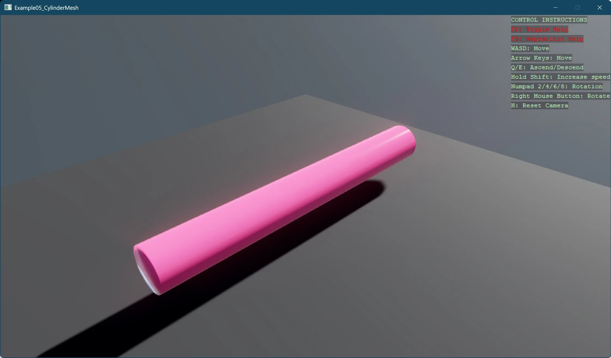

Cylinder mesh
This example demonstrates creating a 3D cylinder mesh programmatically by breaking down the process into clear, distinct steps:
- Setting up a basic 3D scene with a skybox
- Creating precisely defined geometry using low-level mesh construction techniques
- Demonstrating a structured approach to 3D mesh generation by dividing it into logical components:
- Creating ring vertices
- Building side walls
- Adding end caps
We will be utilizing the MeshBuilder class from the toolkit, the process of crafting and rendering these geometries is streamlined.

For more details of MeshBuilder, refer to our MeshBuilder manual.
Note
This example requires the additional NuGet packages Stride.CommunityToolkit.Skyboxes and Stride.CommunityToolkit.Bepu. Make sure to install both before running the code.
View on GitHub.
using Stride.CommunityToolkit.Bepu;
using Stride.CommunityToolkit.Engine;
using Stride.CommunityToolkit.Rendering.Utilities;
using Stride.CommunityToolkit.Skyboxes;
using Stride.Core.Mathematics;
using Stride.Engine;
using Stride.Graphics;
using Stride.Rendering;
using Stride.Rendering.Materials;
using Stride.Rendering.Materials.ComputeColors;
/*
Procedural Cylinder Mesh Generation
This example demonstrates creating a 3D cylinder mesh programmatically by breaking down
the process into clear, distinct steps:
1. Setting up a basic 3D scene with a skybox
2. Creating precisely defined geometry using low-level mesh construction techniques
3. Demonstrating a structured approach to 3D mesh generation by dividing it into logical components:
- Creating ring vertices
- Building side walls
- Adding end caps
The example showcases proper 3D graphics fundamentals like vertex positioning, normal
definitions, triangle winding order, and efficient vertex reuse through indexing. It also
demonstrates good software engineering practices by separating concerns into well-named
methods with clear responsibilities.
*/
const int Segments = 1000;
const float Radius = 0.5f;
const float Length = 8;
using var game = new Game();
game.Run(start: (Scene rootScene) =>
{
game.SetupBase3DScene();
game.AddSkybox();
CreateMeshEntity(game.GraphicsDevice, rootScene, new(0, 1, -Length / 2), b => BuildCylinderMesh(b, Segments, Radius, Length));
});
void BuildCylinderMesh(MeshBuilder meshBuilder, int segments, float radius, float length)
{
meshBuilder.WithIndexType(IndexingType.Int16);
meshBuilder.WithPrimitiveType(PrimitiveType.TriangleList);
var position = meshBuilder.WithPosition<Vector3>();
var normal = meshBuilder.WithNormal<Vector3>();
// Create the vertices for both circular ends
// First end (z = 0)
CreateRingVertices(meshBuilder, segments, radius, position, normal, 0);
// Second end (z = length)
CreateRingVertices(meshBuilder, segments, radius, position, normal, length);
CreateCylinderSideWalls(meshBuilder, segments);
// Create the first end cap (closing the cylinder)
CreateCircularEndCap(meshBuilder, segments, position, normal, 0, false);
// Create the second end cap (closing the cylinder)
CreateCircularEndCap(meshBuilder, segments, position, normal, length, true);
}
Entity CreateMeshEntity(GraphicsDevice graphicsDevice, Scene scene, Vector3 position, Action<MeshBuilder> build)
{
using var meshBuilder = new MeshBuilder();
build(meshBuilder);
var model = new Model
{
new MaterialInstance { Material = CreateMaterial(game) },
new Mesh {
Draw = meshBuilder.ToMeshDraw(graphicsDevice),
MaterialIndex = 0
}
};
var entity = new Entity { Scene = scene, Transform = { Position = position } };
entity.Add(new ModelComponent { Model = model });
return entity;
}
static Material CreateMaterial(Game game) => Material.New(game.GraphicsDevice, new()
{
Attributes = new()
{
MicroSurface = new MaterialGlossinessMapFeature
{
GlossinessMap = new ComputeFloat(0.9f)
},
Diffuse = new MaterialDiffuseMapFeature
{
DiffuseMap = new ComputeColor(new Color4(1, 0.3f, 0.5f, 1))
},
DiffuseModel = new MaterialDiffuseLambertModelFeature(),
Specular = new MaterialMetalnessMapFeature
{
MetalnessMap = new ComputeFloat(0.0f)
},
SpecularModel = new MaterialSpecularMicrofacetModelFeature
{
Environment = new MaterialSpecularMicrofacetEnvironmentGGXPolynomial()
},
}
});
static void CreateRingVertices(MeshBuilder meshBuilder, int segments, float radius, int position, int normal, float zPosition)
{
for (var i = 0; i < segments; i++)
{
var x = radius * (float)Math.Sin(Math.Tau / segments * i);
var y = radius * (float)Math.Cos(Math.Tau / segments * i);
meshBuilder.AddVertex();
meshBuilder.SetElement(position, new Vector3(x, y, zPosition));
meshBuilder.SetElement(normal, new Vector3(x, y, 0));
}
}
// Creates the triangles that form the curved side wall of the cylinder
static void CreateCylinderSideWalls(MeshBuilder meshBuilder, int segments)
{
for (var i = 0; i < segments; i++)
{
var i_next = (i + 1) % segments;
// First triangle of the quad
meshBuilder.AddIndex(i);
meshBuilder.AddIndex(i_next + segments);
meshBuilder.AddIndex(i + segments);
// Second triangle of the quad
meshBuilder.AddIndex(i);
meshBuilder.AddIndex(i_next);
meshBuilder.AddIndex(i_next + segments);
}
}
// Creates a circular cap to close one end of the cylinder
static void CreateCircularEndCap(MeshBuilder meshBuilder, int segments, int position, int normal, float zPosition, bool isEndFacingPositiveZ)
{
// Create center vertex
int centerVertexIndex = meshBuilder.AddVertex();
meshBuilder.SetElement(position, new Vector3(0f, 0f, zPosition));
// Set normal direction based on which end we're creating
var normalDirection = isEndFacingPositiveZ ? new Vector3(0, 0, 1) : new Vector3(0, 0, -1);
meshBuilder.SetElement(normal, normalDirection);
// First end cap has vertices from 0 to segments-1
// Second end cap has vertices from segments to 2*segments-1
int vertexOffset = isEndFacingPositiveZ ? segments : 0;
// Create triangles to form the cap
for (var i = 0; i < segments; i++)
{
if (isEndFacingPositiveZ)
{
// For end cap with Z+ normal
meshBuilder.AddIndex(((i + 1) % segments) + vertexOffset);
meshBuilder.AddIndex(centerVertexIndex);
meshBuilder.AddIndex(i + vertexOffset);
}
else
{
// For end cap with Z- normal
meshBuilder.AddIndex(((i + 1) % segments) + vertexOffset);
meshBuilder.AddIndex(i + vertexOffset);
meshBuilder.AddIndex(centerVertexIndex);
}
}
}